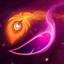
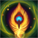
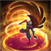
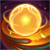
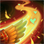
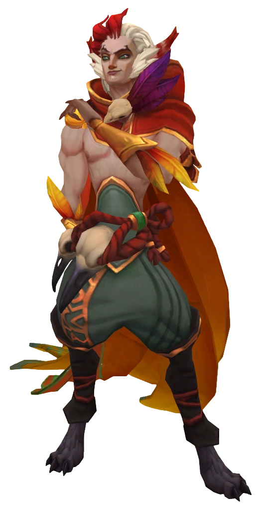

Rakan
As mercurial as he is charming, Rakan is an infamous vastayan troublemaker and the greatest battle-dancer in Lhotlan tribal history. To the humans of the Ionia Crest icon Ionian highlands, his name had long been synonymous with wild festivals, uncontrollable parties, and anarchic music. But this energetic, traveling showman has left his old life behind, dedicating himself to the cause of his lover, the rebel Xayah. Together, they seek to free Ionia’s wild magic, restoring the vastaya’s birthright.





